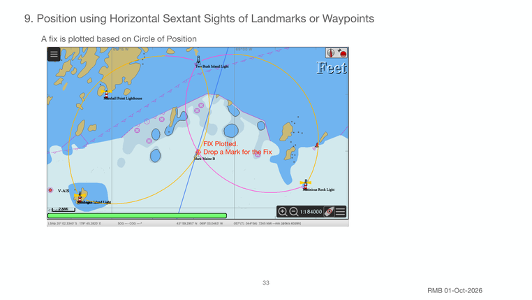

Previous | Contents | Next

9. Position using Horizontal Sextant Sights of Landmarks or Waypoints
A fix is plotted based on Circle of Position
FIX Plotted.
Drop a Mark for the Fix
33
RMB 01-Oct-2026